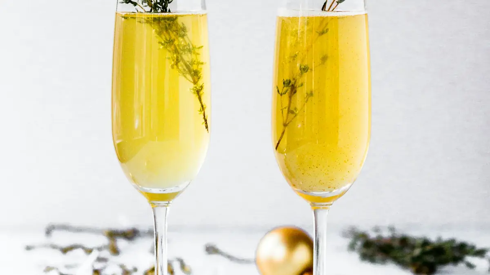

Home › Wine stories › Why Champagne Became the Wine of New Year's Eve and Celebration
Why Champagne Became the Wine of New Year's Eve and Celebration

Photo: Nora Schlesinger on Unsplash
Champagne was not born festive: kings, a regent's parties, the French Revolution and Belle Époque marketing slowly turned it into the bottle we open at midnight.
When the clock strikes twelve on 31 December, millions of corks leave their bottles at almost the same moment. It feels as if Champagne was always meant for this, yet the wine was not born a party drink. Its role as the toast of every milestone was built over centuries by kings, courtiers, revolutionaries and some remarkably shrewd salesmen.
The story starts with royalty. Clovis, king of the Franks, was baptised at Reims in 496, and the city became the place where French kings were crowned. The wines of the surrounding hills were served at those coronation feasts; by Louis XIII's crowning in 1610, according to National Geographic, only Champagne wines were poured. At that time, though, the wine was mostly still, and bubbles were more a nuisance than a selling point. It was in London in 1662 that Christopher Merret described to the Royal Society how adding sugar made wine sparkle.
Fizz became fashionable at court in the 18th century. After Louis XIV died in 1715, the Regent, Philippe d'Orléans, became known for lavish suppers where sparkling wine flowed. In 1728 Louis XV allowed Champagne to be shipped in bottles rather than barrels, which kept the bubbles in, and the following year Ruinart was founded as the first house devoted to sparkling wine. Madame de Pompadour was an enthusiastic hostess, and by the end of the century Champagne was the celebration drink of the elite across Europe's capitals.
The Revolution of 1789 cut the link with the monarchy, but not the habit. Historian Kolleen Guy argues that Champagne slipped into new secular rituals: it could bless a new ship at its launch in place of holy water, and it became the bottle for weddings and christenings. Across the Atlantic, George Washington served it at a state dinner in 1796.
The decisive push came between about 1870 and 1914, the Belle Époque. Champagne houses, many founded by merchants of German origin, aimed squarely at the growing middle classes. Labels glittered with gold lettering, crests and words such as royal, and advertisements tied the wine to engagements, births, Christmas and New Year. It was in this period that the legend of Dom Pérignon as the inventor of Champagne took hold; historians now treat it as a myth, since the monk who died in 1715 did not invent sparkling wine. Better production and transport made bottles more affordable, so Champagne became the splurge for a special day rather than a daily luxury of the rich.
So when you raise a glass this New Year's Eve, you are taking part in a ritual shaped by coronations, revolution and brilliant marketing. Pour a non-vintage brut for the countdown, or a blanc de blancs if you like it lean and chalky, and serve it at around 8 to 10°C in a tulip glass rather than a narrow flute so the aromas can open. Ease the cork out with a gentle sigh rather than a bang: you keep more bubbles, and nobody loses an eye before the fireworks.
Related grapes and regions
Regions
Sources
- Why Champagne? – JSTOR Daily
- Religion, Royalty, and Bubbles: How Champagne Became the Go-To Drink for Celebrating – VinePair
- Who put the bubbles in Champagne? – National Geographic
- Why Do We Celebrate with Champagne? – Live Science
- A Toast to the New Year – Library of Congress, Inside Adams
The Wine Reference newsletter
New wines, stories and career guides, one email a week at most.
Over 18s only. Unsubscribe any time with one click. Your email is stored securely by Kit and never shared.
Support The Wine Reference
This guide is free, with no paywall. If it helped you choose a bottle, you can buy me a glass and keep it growing.
🍷 Buy me a glass